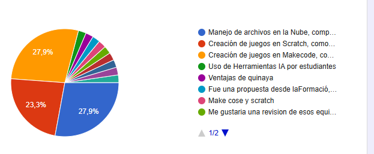

Proyecto Renube
Solución Qinaya • Apropiación TICPropuesta de Ciclo de Webinars de Capacitación Docente: Septiembre – Octubre – Noviembre 2026
Apreciada Sindey y Equipo del Proyecto ÁGATA,
En el marco de los compromisos de apropiación, sostenibilidad pedagógica y acompañamiento continuo a las Instituciones Educativas Distritales vinculadas al Proyecto Renube - Solución Qinaya, nos permitimos presentar a su consideración y aprobación la propuesta del Ciclo Trimestral de Webinars de Capacitación Docente para los meses de Septiembre, Octubre y Noviembre de 2026.
Esta propuesta no responde a un temario teórico unilateral, sino que ha sido estrictamente estructurada a partir de las necesidades prioritarias y requerimientos explícitos expresados por los propios maestros y maestras en la consulta diagnóstica aplicada en campo a los colegios beneficiarios de la solución.
Con el fin de garantizar máxima credibilidad, pertinencia curricular y una alta tasa de asistencia, tabulamos la pregunta diagnóstica: «¡Nos encantaría un Webinar sobre:», recolectada entre los docentes de tecnología e informática y de áreas transversales que utilizan las salas Qinaya. Cerca del 80% de la demanda formativa global (79,1%) se concentró de manera contundente en tres áreas específicas:

«Gestión Eficiente de Archivos en la Nube y Trabajo Colaborativo en Qinaya: De lo Local al Escritorio Virtual»
Este taller resolverá una de las inquietudes más recurrentes en las salas de cómputo: cómo administrar, organizar y respaldar trabajos escolares evitando la pérdida de información y eliminando la dependencia de memorias USB (vector común de virus y lentitud). Se capacitará a los profesores en el manejo de archivos bajo el doble esquema de la solución Qinaya: cómo guardar y gestionar trabajos de forma segura desde el entorno local de la máquina y cómo sincronizarlos fluidamente con el computador virtual en la nube. Aprenderán a crear estructuras de carpetas por cursos y grupos, compartir enlaces de entrega para estudiantes y gestionar permisos de edición y lectura en la nube educativa.
- Objetivo 1: Capacitar a los docentes en la organización, respaldo y flujo bidireccional de archivos pedagógicos tanto en el almacenamiento local del equipo como en el escritorio virtual Qinaya.
- Objetivo 2: Implementar mecanismos de trabajo colaborativo en la nube mediante carpetas compartidas seguras para la asignación, entrega y retroalimentación de tareas escolares en el aula.
«Creación de Videojuegos Educativos con Scratch: Potenciando la Programación Creativa en las Apps Locales Qinaya»
Aprovechando que Scratch se encuentra preinstalado y plenamente optimizado en la barra de aplicaciones locales de Qinaya (garantizando un desempeño sumamente rápido y sin consumir ancho de banda de red institucional), brindaremos a los docentes una ruta metodológica clara para enseñar desarrollo de videojuegos a sus estudiantes. Se explicará cómo construir desde cero un juego interactivo de preguntas y desafíos temáticos: control de personajes mediante teclado, detección de colisiones, animación de escenarios, sistemas de vidas y puntuación, y diseño de niveles. Los profesores recibirán plantillas editables listas para articular con asignaturas de matemáticas, ciencias, sociales o lenguaje antes del receso escolar.
- Objetivo 1: Dotar a los docentes de secuencias didácticas paso a paso para orientar a sus estudiantes en la construcción de videojuegos interactivos con Scratch aprovechando la ejecución local en Qinaya.
- Objetivo 2: Fomentar el pensamiento computacional, la lógica de algoritmos por bloques y la gamificación curricular en el aula de clases con proyectos lúdicos de alto impacto.
«Diseño de Videojuegos Retro y Arcade con MakeCode: Lógica y Creatividad Digital en la Solución Qinaya»
Microsoft MakeCode Arcade es una de las herramientas más solicitadas por los docentes por su versatilidad para crear juegos retro tipo consola (pixel art, plataformas y aventuras). En esta sesión enseñaremos a los docentes cómo formular proyectos de programación orientados a objetos visuales: creación de sprites (personajes y enemigos), diseño de mapas y mundos virtuales (tilemaps), física básica de gravedad y aceleración, y temporizadores. Se mostrará a los docentes cómo los estudiantes pueden probar sus juegos en el simulador integrado, exportar sus creaciones y ejecutarlas eficientemente desde las estaciones Qinaya para cerrar el ciclo escolar con muestras tecnológicas institucionales.
- Objetivo 1: Capacitar a los docentes en la arquitectura y metodología didáctica de MakeCode Arcade para la enseñanza de lógica avanzada de videojuegos (variables, bucles, mapas y eventos).
- Objetivo 2: Guiar a los participantes en la estructuración de proyectos de aula interdisciplinares STEM donde los estudiantes pasen de ser consumidores de juegos a creadores tecnológicos.
Registro de Asistencia
Durante la transmisión en vivo de cada webinar se compartirá en el chat un formulario en línea (Google Forms) oficial, donde cada docente registrará su IED, jornada, sede y correo institucional para consolidar la base de participación auditable.
Grabación y Memorias
Cada webinar será grabado íntegramente en alta definición. Esta grabación se alojará en la nube y se enviará junto con un paquete de material pedagógico descargable (guías didácticas, plantillas y enlaces) para los docentes que no puedan asistir en vivo.
Divulgación en Grupos
Qinaya apoyará con fuerza la convocatoria desde los grupos directos de soporte técnico/pedagógico que mantenemos con cada colegio. Una vez que Ágata apruebe la fecha, publicaremos el enlace y recordatorios para asegurar la máxima audiencia.
| Etapa / Hito | Responsable | Acción Concreta |
|---|---|---|
| 1. Aprobación de Fechas | ÁGATA (Sindey Bernal) | Revisión de las 3 fechas propuestas (18 sep, 9 oct, 13 nov) y confirmación formal de visto bueno. |
| 2. Convocatoria Institucional | ÁGATA / SED | Emisión y envío formal de la invitación circular a las rectorías y coordinaciones de los colegios Qinaya. |
| 3. Divulgación Focalizada | Equipo Qinaya | Publicación del enlace y banners de invitación en cada uno de los grupos de WhatsApp y soporte por colegio. |
| 4. Ejecución del Webinar | Qinaya (Pedagógico) | Desarrollo de la sesión técnica/pedagógica, captura de asistencia en línea y resolución de dudas en vivo. |
| 5. Consolidación y Entrega | Qinaya & ÁGATA | Distribución de grabaciones en grupos de colegios y entrega del informe de asistencia consolidado a ÁGATA. |
Quedamos atentos a sus comentarios o a la aprobación formal de este cronograma para suministrar los enlaces correspondientes de transmisión e iniciar de inmediato el despliegue de piezas de invitación.
Cordialmente,
Computación en la Nube para una Educación sin Límites